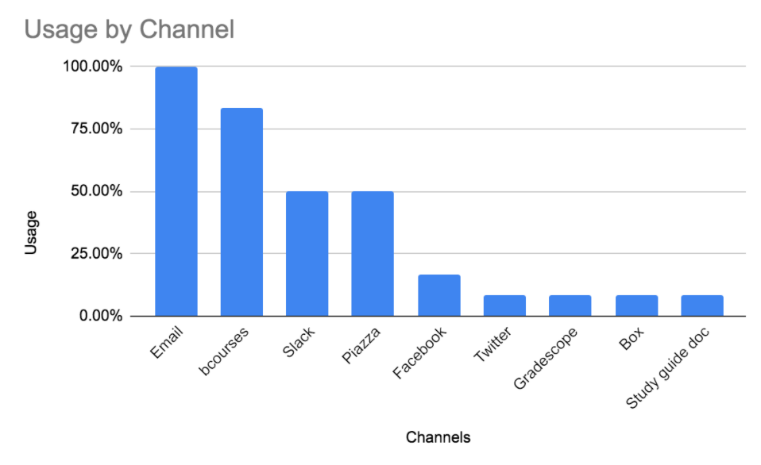

During the Spring of 2020, I was a member of a team of 3 graduate students contracted to conduct UX research for UC Berkeley’s online student portal over a 4-month period. My role was as acting project manager as well as researcher. Not only did I create our research timeline and ensure that everything was completed on time, but I also wrote the script for the contextual inquiries, helped to write the script for the interviews, and conducted a majority of the contextual inquiries as well as several of the interviews. The research itself took place over a period of approximately one month, and we delivered our results to the CalCentral team in May of 2020.
CalCentral, UC Berkeley's online student portal, didn't have a good framework for increasing student engament with the platform. They felt as if students weren't aware of all the features CalCentral had to offer. So, they tasked myself and two other graduate students in the UC Berkeley School of Information to undertake UX Research for them to investigate ways to solve this issue.
To answer the question of how to increase student engagement, we began by identifying three main goals to accomplish with our research. They were:
From these research goals we formatted several research questions and several key assumptions that we had going into our experiment design. Our research questions became:
And our key assumptions were that a majority of students likely use CalCentral mainly at the beginning of the semester to sign up for classes while those with financial aid use it more consistently to check on their aid packages, and that many students probably get campus information through other mediums outside of CalCentral such as Slack, in-person, and email.
For our research methods, we decided on a combination of interviews, contextual inquiries, and a diary study (for reasons which I'll get into later). To recruit research participants, we created a screening survey and sent it to students within the School of Information, a large student advisory body, and a large undergraduate introductory cognitive science class. Our target participant profiles were as follows:
With this spread of users we hoped to hear from several more edge cases as well as from the average users to give us a broad understanding of the reasons the student body uses CalCentral's services. With our screening survey were able to recruit 22 total participants to distribute across our different methodologies.
For one of our methodologies we chose to employ a diary study. Our diary study sought to understand specific tasks on CalCentral, which channels students are using to access information, and how students gather information from these other channels. With this information we figured we could infer which platforms could be best utilized by CalCentral to broadcast information to students. The diary study was especially relevant considering the variety of ways students were forced to receive info since classes were canceled due to Covid.
During the recruitment phase, we had 12 very enthusiastic participants, but only 6 participated, despite daily reminders. Follow up after the study revealed that participants had either underestimated their own workload or had nothing to report. You can see some of the results for which platforms students use most often to access information below.

As for what channels students use most often, we found that email and bCourses (the university grade and assignment website) were the top two channels used to get course information as they were considered most reliable in terms of coverage and timing. For graduate students Slack was #3, and for undergrads social media platforms took the third position.
And as for why participants used each channel:
For email, we found that participants used this most often for university-level announcements about Covid, about grants and fellowships, and as the one-stop-shop for all information since cross-platform notifications can be consumed. The only problem with email is when students opt to receive notifications in batches and some information slips through the cracks.
For bCourses, we found that students use this for anything related to course logsitics, exams, grading, assignments, etc.
And we found that Slack was used for more peer-2-peer, group-level information exchanges such as project collaboration, department specific events, and social announcements.
We performed several contextual inquiries to understand how students accessed different information and which steps in that process were the most important to them. Our goal was to understand which platforms students prefer to use and how often they use them, without explicitly telling them to use CalCentral. With this information we again sought to infer which platforms could be best utilized by CalCentral to broadcast information to students. With every task we asked questions like ‘which platform do you think to use first for this task’, and ‘are there any costs or benefits of using this platform?’
Some of our main findings were that:
We carried out (remote) interviews in order to gatheri more in-depth data on how students collect university-related information from various channels to supplement our contextual inquiry and diary study findings.
We decided to ease into the conversation to try and guide the user to thinking about “what’s Important” to them. We started by asking “what platforms do you use?” and “what notifications do you pay attention to?” then eased into how it pertains to student life, asking how they prefer to get information about assignments and campus information. We didn’t get to CalCentral until the second part of the interview. Where we asked “what tasks do you associate CalCentral with?” to get them thinking about it, and eventually lead to more abstract questions like “What feelings do you associate with CalCentral?”
In addition to what we heard from our contextual inquiries and our diary study, we found that CalCentral is seen as an administrative/logistical tool, and that both grad students and undergrads tend to have neutral to anxious feeling when using CalCentral but attribute this to the rush to enroll or meet deadlines.
From the above findings, we cultivated a list of key recommendations for CalCentral to utilize in their attempts to increase student engagement and better advertise available services to students. The recommendations are as follows:
We also created multiple user personas from our findings which we shared with CalCentral to use in future research.
In addition to the findings detailed above, we delivered a comprehensive research framework for CalCentral to utilize for any future research questions they may have. After presenting our findings and recommendations to CalCentral, they updated their website to reflect our research. One of the immediate addages, corresponding to a few of our recommendations from above, was a notifications tab that syncs with a separate student portal that houses their assignments, pictured below and outlined in red for clarity.